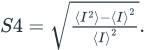
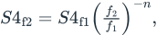
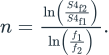

整体概括
观测驱动的频段风险外推
论文把沙迦地基 GNSS 的 L 波段幅度闪烁按幂律频率关系缩放到直连手机的低波段、3GPP N255 与 N256，再用同区域 F7/C2 掩星做独立对照。地基数据覆盖 2020–2024，掩星只取 2023–2024；目标是把现成的 GNSS 闪烁监测转成新频段的风险代理，属于观测驱动的可行性试点。验证来自频率缩放与两类闪烁观测，作者把 D2C 地面站和卫星信号质量的检验列为未来工作；本文没有报告 D2C 终端误码率或中断率测量。
对照原文证据
This work investigates the spatial and temporal characteristics of amplitude scintillation at D2C frequencies by scaling L-band scintillation observations from Global Navigation Satellite Systems (GNSS) receivers to bands relevant to D2C operation, including the low-band, and 3GPP’s N255 and N256.We rely on a Septentrio PolaRx5S multi-frequency multi-constellation reference GNSS receiver located at Sharjah (Geographic Latitude: 25.28\degree , Geographic Longitude: 55.46\degree ), United Arab Emirates, which provides data over the ascending phase of solar cycle 25 ( 2020 – 2024 ).This work also utilizes RO amplitude scintillation observations from F7/C2 for the years 2023 – 2024Future work will focus on validating these findings using measurements from D2C ground-based monitoring stations and satellite-derived signal quality metrics.主结论与定位：南向优势、低波段更高风险
两套观测都给出 20–22 地方时的主峰，闪烁集中在春秋分附近，并随太阳活动增强；地基还显示南向卫星链路占多数，低波段强闪烁计数超过 N255 与 N256 的两倍。作者把频率缩放定位为 D2C 设计的风险指示器，并把真实 D2C 地面站与卫星信号质量的验证留给未来工作。结论明确限定在沙迦这一区域案例，不能当成全球普适规律。
对照原文证据
Both space-based and ground-based observations indicate a pronounced diurnal scintillation peak between 20–22 local time, particularly during the equinoxes, with occurrence rates increasing with solar activity. Ground-based observations also reveal a strong azimuth dependence, with most scintillation events occurring on southward satellite links. The scintillation occurrence rate at the low-band is more than twice that observed at N255 and N256, highlighting the increased robustness of higher D2C bands to ionospheric scintillation.Here, we provide a proof of concept on how this can be achieved by using data from a multi-frequency GNSS reference receiver located at Sharjah, United Arab Emirates.Future work will focus on validating these findings using measurements from D2C ground-based monitoring stations and satellite-derived signal quality metrics.Research gap
专用监测站与全太阳周期观测的时间成本
作者把缺口落在基础设施与时效：要刻画一个太阳周期内的闪烁变化，需要专用闪烁监测站和长期观测战役，但建设与维护成本高，难以为已经在部署的 D2C 系统提供及时依据。已部署系统等不起完整周期，而替代性的长期观测又必须能覆盖地方时、季节、到达方向和太阳活动这几个维度。本文因此选择现有 GNSS 与掩星资料，先给出频段级风险图景。
对照原文证据
To better understand the risk of ionospheric scintillation on D2C systems, dedicated scintillation monitoring stations must be installed and long-term observation campaigns conducted to capture scintillation variations over the 11-year solar cycle.In practice, however, establishing and maintaining such infrastructure over a full solar cycle is resource-intensive and cannot provide timely insight for the D2C deployments already underwayThis work proposes scaling widely available GNSS L-band amplitude-scintillation observations to D2C frequencies to assess scintillation risk to D2C links as a function of local time, season, signal arrival direction, and solar activity.D2C 双向链路对快起伏更敏感
论文强调 D2C 与 GNSS 的受力方式不同：普通用户同时参与上行和下行，而 GNSS 用户只接收下行；GNSS 还依赖跟踪环路抑制短时起伏，语音和宽带业务却对突发信号变化更敏感。这一差异是作者认为闪烁对 D2C 影响可能更突出的理由，属于定性论证；已读取的正文没有给出链路预算、调制方式或误码率仿真。
对照原文证据
This is due to the two-way nature of D2C, with standard users being a part of both uplink and downlink, compared to only downlink for standard GNSS users.However, D2C communications, especially voice or broadband connectivity, are sensitive to abrupt signal fluctuations.文献缺口：缺自洽的长期跨频段研究
作者把已有工作分成两类：多频闪烁观测或仿真，以及把 L 波段缩放到 VHF、L1/L2/L5 或 UHF 的尝试；但缺少一个从 L 波段到 D2C 频段、包含天基掩星对照并给出可推导结论的长期自洽研究。本文的回应是把地基五年与掩星两年放进同一缩放框架，比较昼夜、季节、年份与方位，而不是只报一个站点的总发生率。
对照原文证据
In the literature, the investigation of multi-frequency ionospheric scintillation has recently been proposed by Xu et al. (2026) using an observation-based approach, and by Sun et al. (2026) with a simulation-based approach.For instance, L-band scintillation was scaled to very high frequency (VHF) in Bhattacharyya et al. (2019) , and the different GNSS L-band frequencies (L1/L2/L5) in Song et al. (2022) and Carrano et al. (2014) .Yet, what is missing from the literature is a self-contained long-term study on the scaling of scintillation from L-band to D2C frequencies, including comparisons with space-based RO measurements, and the conclusions that can be derived as a result.算法主线

原图由 arXiv 加载；若未显示，可打开下方原图链接。
跟着原图读
- 先读坐标与图例
横轴是 L1 的 S4，不是时间或频率；纵轴是拟合出的 n。四条线都是 S4_L1 的线性函数，斜率在 −1.90 到 −2.14 之间，截距在 1.89 到 2.14 之间。先确认每条线对应哪种观测组合，避免把 F7/C2 的 L2 拟合当成地基 L2。
- 比较 S4=0.3 与 S4=1 两端的取值
在 S4=0.3，DNA 实线约 1.50，F7/C2 虚线约 1.51，地面 L2 点划线约 1.44，地面 L5 点线约 1.32；到 S4=1，四条线都落在 0 附近，但并非全部严格等于零：DNA 线按定义取 0，F7/C2 拟合仍有约 0.12 的正值，两条地基线略低于零。四条线在 S4=1 附近彼此接近，越往低 S4 分散越明显，说明它们只是量级接近，不是同一条线。
- 把图与表 1 的分工分开
这张图回答“用哪条 n 线做外推”；表 1 回答“用该线把 L1 缩放到 L2/L5 后与实测差多少”。图上看不到 D2C 频段的任何观测，也没有误差棒或置信带。
- 看饱和趋势
四条线在 S4 接近 1 时都趋向零附近：DNA 线按定义在 S4=1 处为 0，F7/C2 拟合仍有约 0.12 的正值，两条地基线略低于零。可见“饱和到 0”是 DNA 经验线的约束，不是四条拟合共同的精确终点；图也不覆盖 S4<0.3 的弱闪烁。
不能从图读出 800/1600/2000 MHz 的 S4，也不能把 n 的拟合线当成 D2C 实测。三条实测线与 DNA 线不重合，L5 线在低 S4 端比 DNA 低约 0.2，在 S4=1 附近与 DNA 线接近但不完全重合，因此不能写成“完全相同”或“验证了 DNA 线”；表 1 的 RMSE/R² 接近只说明在 L2/L5 内部两种取法的误差相当。

原图由 arXiv 加载；若未显示，可打开下方原图链接。
跟着原图读
- 先确认图的类型
横轴是频率、纵轴是缩放后的 S4，只有一条线，说明它是把 M2 在固定 S4_L1=0.3 下对低波段频率扫描的结果，不是某天某站的观测序列，也不是 D2C 误码率曲线。
- 先看 800 MHz 附近的量级
800 MHz 附近纵轴约 0.83，已高于 0.6 的强闪烁阈值；往低频走曲线继续上升并在 700 MHz 顶到 1.0 的上限，往高频走则缓慢下降，到 1000 MHz 接近纵轴下限 0.6。读数只能算目视约数；曲线本身是按公式计算的，不是独立观测。
- 核对曲线形状与公式
曲线单调、略向下凸，与 M2 在 n≈1.5 时的 (f/1575.42)^−1.5 形状一致；700 MHz 处顶到 1.0 的纵轴上限，精确值需按公式计算。这说明图是公式示意，不是独立观测验证。
不能把纵轴读成链路性能或中断概率；曲线只覆盖 S4_L1=0.3 这一条输入，换成弱闪烁或强闪烁会得到不同曲线。700 MHz 端点被截断，不能从图读该处精确 S4；纵轴下限 0.6 也遮住了弱闪烁部分。图中没有误差棒，不能据此判断模型不确定度。
地基接收机、仰角筛选与磁扰剔除
地基部分使用沙迦的 Septentrio PolaRx5S 多频多星座接收机，站址 25.28°N、55.46°E，数据覆盖 2020–2024。L1 闪烁取自 GPS L1 C/A 与 Galileo E1，两者载频都是 1 575.42 MHz；为压低多路径只保留仰角大于 30° 的观测，并剔除 Kp 大于 4 或 Dst 小于 −50 nT 的磁扰时段。这意味着分析本身不覆盖强磁暴条件。
对照原文证据
We rely on a Septentrio PolaRx5S multi-frequency multi-constellation reference GNSS receiver located at Sharjah (Geographic Latitude: 25.28\degree , Geographic Longitude: 55.46\degree ), United Arab Emirates, which provides data over the ascending phase of solar cycle 25 ( 2020 – 2024 ).The retrieved observations correspond to L1 scintillation from GPS L1 C/A and Galileo E1, both having a carrier frequency of 1\,575.42\,\mathrm{MHz} .Additionally, to limit the influence of multipath on scintillation, this work utilizes observations with an elevation greater than 30\degree .Furthermore, to remove the influence of geomagnetically active periods, observations that coincide with either a planetary K-index (Kp) greater than 4 or a disturbance storm-time (DST) index less than -50\,\mathrm{nT} were removed.掩星子集：经纬度框与仅 GPS
F7/C2 只取 2023–2024 的掩星幅度闪烁，并把经纬度限制在 54–57°E、23–27°N，以匹配地基接收机的覆盖；2022 年虽有最早一批闪烁观测，但为只保留完整年份而被排除。掩星侧只用 GPS，因此“地基对天基”的比较同时受星座、采样几何和年份长度影响：地基是五年站点数据，掩星是两年经过该框的剖面。
对照原文证据
The longitude and latitude values of the observations were limited to 54\degree\leq\text{longitude}\leq 57\degree and 23\degree\leq\text{latitude}\leq 27\degree to enable a comparison with observations from the ground-based receiver by matching the region of coverage.This work also utilizes RO amplitude scintillation observations from F7/C2 for the years 2023 – 2024The first available scintillation observation from F7/C2 was in 25/03/2022 . Observations of the year 2022 were omitted to focus on complete years.Additionally, only GPS observations were used in this work for F7/C2.S4：60 秒强度归一化标准差
幅度闪烁用 60 秒窗内信号强度 I 的标准差除以平均强度来表示，即强度方差归一化后开方，得到无量纲的 S4。原文把 S4<0.3 称弱、0.3≤S4≤0.6 称中等、S4>0.6 称强，并只统计强闪烁；作者引用 ITU 指出这类事件可带来超过 14 dB 的峰峰功率起伏。这里的 dB 是信号功率起伏幅度，不是误码率、吞吐或中断率，也不能折算成 PPP 定位精度或固定率。
对照原文证据
Amplitude scintillation is represented by the standard deviation of the signal’s intensity (I) normalized to the average signal intensity over 60 seconds ( 3GPP, 2020 ) , i.e.,The severity of scintillation can be inferred from the magnitude of S_{4} , where weak, moderate, and strong scintillation are represented by S4<0.3 , 0.3\leq S4\leq 0.6 , and S4>0.6 , respectively ( 3GPP, 2020 ) . This work focuses on strong scintillation, since such events can cause peak-to-peak power fluctuations greater than 14\,\mathrm{dB} ( ITU, 2025 ) .频率指数 n：经验线、饱和趋势与拟合
频率缩放需要一个随闪烁强度变化的指数 n。综述指出 30 MHz–6 GHz 的观测给出 n 约在 1–2；DNA 实验在弱散射下得到 n=1.5，并随 S4 接近 1 饱和到 0，可用 S4=0.3 时 n=1.5 到 S4=1 时 n=0 的线性关系描述。作者用地面与 F7/C2 同步观测反算 n 并拟合，发现与 DNA 线量级接近后选择 n_DNA 外推；图 1 显示三条拟合线并不完全重合。
对照原文证据
The frequency scaling exponent n for frequencies ranging from 30\,\mathrm{MHz} to 6\,\mathrm{GHz} , as observed from multiple satellite measurements, was found to range between 1 to 2 (see Table 3.4 in Wheelon (2006) ).Through its observations, the value n=1.5 was empirically derived ( Fremouw et al., 1978 ) for the weak scattering assumption, i.e., weak to moderate scintillation ( 3GPP, 2020 ; Wheelon, 2006 ) .Therefore, the trend of n can be well represented by a linear relationship between moderate and strong values of scintillation, where n=1.5 at S4=0.3 and n=0 at S4=1 ( Bhattacharyya et al., 2019 ) .To see if this DNA-derived linear trend is applicable in our scenario, five years of simultaneous observations of GPS-derived S4_{\mathrm{L1}} / S4_{\mathrm{L2}} / S4_{\mathrm{L5}} from the ground-based receiver and two years of simultaneous observations of S4_{\mathrm{L1}} / S4_{\mathrm{L2}} from F7/C2 were used关键公式
S4 定义：强度归一化标准差的量纲
强度闪烁指数 S4 是 60 秒窗内信号强度的标准差除以平均强度，等价于强度的变异系数；先算方差再开方，所以与强度同量纲相除后无量纲。I 是接收强度，⟨·⟩ 是窗内平均，S4 越大表示相对起伏越强。实现上要注意窗口长度、去趋势和接收机带宽都会改变数值；阈值 0.3 与 0.6 是 3GPP 的分级约定，不是从公式一推导出的物理常数。
对照原文证据
Amplitude scintillation is represented by the standard deviation of the signal’s intensity (I) normalized to the average signal intensity over 60 seconds ( 3GPP, 2020 ) , i.e.,The severity of scintillation can be inferred from the magnitude of S_{4} , where weak, moderate, and strong scintillation are represented by S4<0.3 , 0.3\leq S4\leq 0.6 , and S4>0.6 , respectively ( 3GPP, 2020 ) .频率缩放：幂律方向与饱和边界
频率缩放式用目标频率与源频率之比的负 n 次方缩放 S4：频率越高、缩放后的 S4 越小，符合低波段更易出现强闪烁的观测方向。f1 是源频率、f2 是目标频率，n 为频率指数，S4 无量纲。它假设同一不规则体谱与同一传播几何下幅度闪烁按单一幂律变化；当 S4 接近 1 时 n 趋于 0，缩放因子接近 1，频率缩放不再显著拉开频段差异。原文没有给出强闪烁区的独立误差评估，因此这里只能把它当作一阶近似。
对照原文证据
where S4_{f_{1}} is the S4 observation at frequency f_{1} , and S4_{f_{2}} is the scaled S4 at frequency f_{2} . Furthermore, the frequency exponent n , which characterizes the signal frequency dependence of amplitude scintillation ( Bhattacharyya et al., 2019 ) , is represented byAs the magnitude of S4 increases and approaches unity, n saturates at 0 ( 3GPP, 2020 ; Fremouw et al., 1978 ) .由双频反推 n：对数比值与样本配对
反推式是缩放式的对数解：两个频率上同时观测到的 S4 比值取对数，再除以频率比的反向对数，得到逐样本的 n。若 f1 低于 f2 且高频 S4 更小，分子与分母同为负，n 为正；两个 S4 必须来自同一射线、同一时间窗，否则比值会混入几何与采样差异。当两个频率的 S4 都接近零时，逐点 n 会被观测噪声主导，需要另行处理；来源没有给出低 S4 端的专门规则，本文的统计范围是 0.3≤S4≤1，并对结果做最小二乘拟合，而不是把逐点 n 直接用于外推。
对照原文证据
where S4_{f_{1}} is the S4 observation at frequency f_{1} , and S4_{f_{2}} is the scaled S4 at frequency f_{2} .with the value of n calculated as in ( 3 ) for 0.3\leq S4\leq 1 . Next, a least-squares approach was utilized to obtain the best-fit line for n_{\mathrm{L2}} that scales S4_{\mathrm{L1}} to S4_{\mathrm{L2}} , and n_{\mathrm{L5}} that scales S4_{\mathrm{L1}} to S4_{\mathrm{L5}} .S4：60 秒窗内强度标准差的归一化

把信号强度 I 在 60 秒窗内的标准差除以平均强度，得到无量纲的幅度闪烁指数。先取强度二阶矩与一阶矩平方之差（方差），再除以均值平方后开方，等价于强度的变异系数；它衡量相对起伏，而不是绝对功率。
符号与实现提醒
- I
- 接收信号强度，任意线性功率单位；同一窗内采样。
- ⟨I⟩
- 60 秒窗内的平均强度，与 I 同单位。
- S4
- 幅度闪烁指数，无量纲；弱、中、强分级按原文阈值 0.3 与 0.6。
窗口长度、去趋势方式与接收机带宽都会改变 S4；原文只给 60 秒定义，未说明是否去趋势。S4 是强度域统计量，不等于相位闪烁，也不能直接换算成误码率或中断率。阈值 0.3/0.6 是分级约定，不是公式推出的常数。
频率缩放：按频率比的负 n 次幂外推

把源频率 f1 上观测到的 S4 乘以 (f2/f1) 的 −n 次方，得到目标频率 f2 上的 S4。n 为正时频率越高 S4 越小；n=1.5 时频率减半会把 S4 放大约 2.8 倍，这是低波段风险更高的数学来源。
符号与实现提醒
- S4_f1
- 源频率 f1 上的实测幅度闪烁指数，无量纲。
- S4_f2
- 外推到目标频率 f2 的闪烁指数，无量纲。
- f1、f2
- 源与目标载频，同一单位即可（Hz 或 MHz）。
- n
- 频率指数，无量纲；本文取 DNA 经验线给出的值。
公式假设同一不规则体谱、同一传播几何和单一幂律；n 随 S4 变化，S4 接近 1 时饱和到 0。S4 接近 1 时缩放因子接近 1，频段间差异被压缩；跨越很大频率比或源与目标观测几何不同时，单一幂律假设更可能失效。原文没有给出这些情形的独立误差评估。它只缩放幅度闪烁强度，不含相位、极化、天线与链路预算。
双频反推 n：对数比值除以频率比对数

把 M2 取对数后解出 n：两个频率的 S4 比值取自然对数，除以 f1/f2 的自然对数。它是逐样本估计，用于检查实测闪烁的频率依赖，再由最小二乘拟合得到随 S4 变化的经验线。
符号与实现提醒
- S4_f1、S4_f2
- 同一射线、同一时间窗在两个频率上的 S4，无量纲且应为正。
- f1、f2
- 两个观测频率，同一单位；比值无量纲。
- n
- 反推的频率指数，无量纲；弱散射时接近 1.5。
反推要求同一射线、同一时间窗的严格配对观测；两个频率越接近，分母 ln(f1/f2) 越小，同样的 S4 比值误差会放大成更大的 n 误差。当 S4 接近零时，逐点 n 也会被观测噪声主导。本文只在 0.3≤S4≤1 上计算并做拟合，不能把单点 n 当作普适常数。
实验怎么做
用 L2/L5 真值检验 n_DNA 的内部一致性
作者用同步 L1/L2/L5 观测检验 n_DNA：用 n_L2、n_L5 与 n_DNA 把 L1 缩放到 L2/L5，与实测比较。L1→L5 RMSE 为 0.085（LS）与 0.086（DNA），R² 均 0.76；L1→L2 地基 0.074 与 0.074，R² 均 0.82；F7/C2 0.087 与 0.085，R² 0.72 与 0.73。两组接近，说明该比较只是 GNSS 频段间的一致性检验，不是 D2C 链路验证。
对照原文证据
Scaling LS best-fit DNA RMSE \mathrm{R}^{2} RMSE \mathrm{R}^{2} L1 to L5 0.085 0.76 0.086 0.76 L1 to L2 (Ground-based) 0.074 0.82 0.074 0.82 L1 to L2 (F7/C2) 0.087 0.72 0.085 0.73As can be seen from Table 1 , the performance metrics almost match, which proves the suitability of using n_{\mathrm{DNA}} to scale scintillation from GNSS to D2C frequencies.三个代表频率与表 2 的真实上下行范围
作者给每个频段选一个代表频率，而非逐信道计算：低波段 800 MHz、N255 1 600 MHz、N256 2 000 MHz，并说明它也近似覆盖 PCS G Block。表 2 的实际范围并不围绕代表频率对称：低波段上行 698–849 MHz、下行 728–894 MHz；N255 的代表频率在其下行之上、上行之下，N256 的只落在上行内、低于下行。因此结果是频带级风险指示，不能替代逐信道、双工方向和终端的链路预算。
对照原文证据
This work will focus on three bands by scaling the L1 scintillation to three distinct frequencies: N255 represented by 1\,600\,\mathrm{MHz} , N256 represented by 2\,000\,\mathrm{MHz} (this also covers PCS G Block due to similar frequency values), and LB represented by 800\,\mathrm{MHz} .Band Uplink Freq. (MHz) Downlink Freq. (MHz) Reference Low-band (AST and AT&T) 698 – 849 728 – 894 ( FCC, 2025 ) PCS G Block (Starlink and T-Mobile) 1\,910 – 1\,915 1\,990 – 1\,995 ( FCC, 2024 ) NR N255 1\,626 – 1\,660 1\,525 – 1\,559 ( 3GPP, 2024 ) NR N256 1\,980 – 2\,010 2\,170 – 2\,200 ( 3GPP, 2024 )计数口径：逐分钟出现次数，不按观测机会归一化
统计量是逐分钟的强闪烁出现次数，而不是按过境机会或有效样本数归一化的发生率。表 3 给出地基与 F7/C2 的原始计数：L1 为 9 652 与 1 460，低波段 25 875 与 5 275，N255 9 447 与 1 409，N256 7 432 与 982。作者称地基观测数是 F7/C2 的 6.61 倍，并归因于地基采样节奏更高；但按表 3 四个频段直接相加，该倍数与表内计数并不吻合，来源未说明其汇总口径，本站保留为待核。因此跨仪器比较只能看同一仪器内部的频段倍数，不能把计数直接当概率、可用率或风险。
对照原文证据
Band Number of S4>0.6 observations Ground-based F7/C2 L1 \phantom{0}9\,652 1\,460 LB 25\,875 5\,275 NR N255 \phantom{0}9\,447 1\,409 NR N256 \phantom{0}7\,432 \phantom{0}\,982The number of ground-based strong scintillation observations (Table 3 ) was 6.61\times times higher than the F7/C2 observations. This is simply due to the higher cadence of ground-based observations.These trends represent the number of minute-by-minute occurrences (or observations) of strong scintillation.提升与证据
频段倍数：低波段显著高于 N255/N256
在整个研究期，低波段强闪烁计数是 L1 的 2.68 倍（地基）与 3.61 倍（F7/C2）；N255 与 L1 相当，分别约 0.98 与 0.97 倍；N256 更低，为 0.77 与 0.67 倍。排序在两类仪器中一致，支持“频率越高、强闪烁越少”的方向；但倍数来自各自数据集的计数，未按观测机会归一化；N256 的绝对量仍有 7 432 与 982，不能读成高频不会闪烁。
对照原文证据
Over the entire study period, the number of scintillation observations in the LB was 2.68\times and 3.61\times those observed at L1 from ground-based and F7/C2 measurements, respectively.In contrast, the occurrence rates at N255 were comparable to L1, at approximately 0.98\times and 0.97\times of the L1 ground-based and F7/C2 observations. For N256, the corresponding occurrences were lower, at 0.77\times and 0.67\times of the L1 ground-based and F7/C2 observations, respectively.Band Number of S4>0.6 observations Ground-based F7/C2 L1 \phantom{0}9\,652 1\,460 LB 25\,875 5\,275 NR N255 \phantom{0}9\,447 1\,409 NR N256 \phantom{0}7\,432 \phantom{0}\,982Fig. 3 also shows that even N256 with its higher frequency will be subjected to considerable levels of strong scintillation.昼夜：20–22 LT 主峰与 15–17 LT 次峰
地基与掩星都在 20–22 地方时看到所有频段的最大峰，对应日落后到午夜；地基低波段还在 15–17 地方时出现一个次级峰，作者把它与弱 L 波段闪烁和偶发 E 层联系起来，但这是解释而非本文的直接观测。午夜后两套仪器都有回升，F7/C2 对该午夜后峰的观测跨度更长，原文称可达 6 小时。
对照原文证据
The largest peak of scintillation as observed by F7/C2 and the ground-based receiver is seen at 20 – 22 local time for all bands, corresponding to the post-sunset to midnight period.A second minor peak is also seen by the ground-based receiver at the LB at 15 – 17 local time which represents the daytime pre-sunset period. This secondary peak is typically observed as weak L-band scintillation ( Shaikh et al., 2021 ; Shaikh et al., 2020 ; Darya et al., 2024 ) , and is typically associated with the sporadic E layers ( Shaikh et al., 2024 )Another peak is observed after midnight by both instruments, with F7/C2 observing it for a more extended period up to 6 hours.Fig. 3 shows the diurnal variation of scintillation.季节与太阳活动：春秋分最强，2023–2024 陡增
沙迦地基与同区域掩星都显示，所有频段在夏季和冬季计数最低，春秋分最高，秋季最突出；原文提到这常被归因于 Russell–McPherron 效应。年际上 2020 与 2021 相近，2022 渐增，2023 与 2024 陡增。图 5 下图的 F10.7 太阳射电通量只是太阳活动指标，不能把年际增长全部归因于太阳活动，因为观测年份、卫星轨道采样与磁扰剔除的实际情况也在变。
对照原文证据
For all trends, the summer and winter seasons saw the lowest number of scintillation observations, while the equinoxes, and particularly the autumnal equinox (September–October), had the highest occurrence of scintillation, for both ground and space-based instruments.This seasonal enhancement is commonly attributed to the Russell–McPherron effect ( Russell and McPherron, 1973 ) , enabled due to the reverse alignment between the Earth’s magnetic field and that of the solar wind ( Buschmann et al., 2024 ) .Figure 5: Yearly trend of strong scintillation occurrences. Lower plot: F10.7 solar radio flux in sfu.Each trend shows similar values in 2020 and 2021 followed by a gradual increase in 2022 and a sharp increase in 2023 and 2024 .南向优势是沙迦局地几何，不是普适规律
方位统计给出北向事件占比：低波段 23%，N255 7%，N256 5%，即绝大多数强闪烁来自南向链路。作者用接收机位于北赤道异常峰附近、南侧闪烁更强来解释这一不对称。但这是沙迦局地几何与本文样本的结果；不能据此推断中国或其它纬度也以南北向为主，更不能把南向劣势当成全球直连手机星座的调度准则。
对照原文证据
In fact, the percentage of northerly occurrences was 23\% for LB, and 7\% and 5\% for N255 and N256, respectively.This is due to scintillation effects being more intense south of the receiver location which falls within the northern equatorial ionization anomaly crest, as compared to mid-latitude regions north of the receiver ( Dunn et al., 2024 ) .Spatial patterns, particularly the strong southerly azimuth dependence observed in this region, enable operators to enact strategies that prioritize geometries less affected by scintillation.
原图由 arXiv 加载；若未显示，可打开下方原图链接。
跟着原图读
- 先看两个纵轴的量程
上 panel 0–8000、下 panel 0–1500，面板高度相近但刻度差约五倍；不能用红圈在纸面上的高度直接比较地基与掩星的计数，必须先读各自纵轴。
- 再看 20–22 LT 的峰值与频段排序
两 panel 都在 20–22 LT 达峰。目视约数：上 panel 的 LB 峰约 6200，N255、L1、N256 约 2500–3100；下 panel 的 LB 峰约 1100，其余约 270–380。两 panel 都是 LB 最高、N256 最低，排序一致，但绝对计数不可直接相减。
- 看 0–2 LT 与 15–17 LT 的局部结构
左端 0–2 LT 的回升对应正文说的午夜后峰，与 20–22 LT 主峰是两件事；上 panel 在 15–17 LT 还有一个只在 LB 明显的小峰，对应正文的日间次峰。下 panel 的午夜后回升更宽，原文称 F7/C2 的观测跨度可达 6 小时。
- 最后看计数口径
纵轴是逐分钟出现次数，不是按观测机会归一化的发生率；地基采样更密，作者称地基观测数高于掩星，但按表 3 四频段直接相加与作者给出的 6.61 倍并不一致。图上的峰高只说明该数据集内的事件数，不说明链路可用率。
不能把两 panel 的高度差当成性能比，也不能把计数读成概率、可用率或中断率；它没有分母（观测机会数），也没有置信区间。LB 与 N255/N256 的倍数只在同一 panel 内有意义；20–22 LT 的峰不等于“必然中断”，15–17 LT 的次峰也不等于已证实由偶发 E 层造成。作者另称地基观测总数是 F7/C2 的 6.61 倍，但按表 3 四个频段直接相加与 6.61 不一致，来源未说明该倍数的口径。
局限与追问
作者限定的范围：单站、区域框、短掩星序列
作者把结论限定为一个区域案例：地基只有沙迦一个接收机，掩星被裁到 54–57°E、23–27°N 且只有 2023–2024 两年，2022 年还被排除；两类数据的年份长度不同。再加上 Kp>4 或 Dst<−50 nT 的样本被剔除，本文不覆盖强磁暴条件，也不能外推到全球低纬或其它经度。
对照原文证据
The longitude and latitude values of the observations were limited to 54\degree\leq\text{longitude}\leq 57\degree and 23\degree\leq\text{latitude}\leq 27\degree to enable a comparison with observations from the ground-based receiver by matching the region of coverage.The first available scintillation observation from F7/C2 was in 25/03/2022 . Observations of the year 2022 were omitted to focus on complete years.This work also utilizes RO amplitude scintillation observations from F7/C2 for the years 2023 – 2024Furthermore, to remove the influence of geomagnetically active periods, observations that coincide with either a planetary K-index (Kp) greater than 4 or a disturbance storm-time (DST) index less than -50\,\mathrm{nT} were removed.方法边界：幂律外推、60 秒窗与代表频率
频率缩放假设单一幂律与同一不规则体谱；n 随 S4 增大而减小并在 S4 接近 1 时趋于 0。低波段的中等 L1 闪烁按 n≈1.5 会被放大成强闪烁，而目标 S4 已进入 n 更小的区间；原文没有说明是否按目标 S4 迭代求解 n，也没有给出该区的独立误差评估，因此这一步应视为一阶近似。60 秒归一化窗、仰角筛选与三个代表频率都会改变计数；原文没有给出相位闪烁、极化、多径或终端天线的影响，也没有把 S4 换算成链路可用率。因此这里给出的是相对频段排序，不是绝对链路性能。
对照原文证据
Due to the frequency dependence of scintillation, the low-band (LB) is particularly prone to ionospheric scintillation as can be seen in Fig. 2 , where moderate scintillation seen in L1 ( S4=0.3 ) equals strong scintillation ( S4>0.6 ) in the LB.Therefore, the trend of n can be well represented by a linear relationship between moderate and strong values of scintillation, where n=1.5 at S4=0.3 and n=0 at S4=1 ( Bhattacharyya et al., 2019 ) .Amplitude scintillation is represented by the standard deviation of the signal’s intensity (I) normalized to the average signal intensity over 60 seconds ( 3GPP, 2020 ) , i.e.,Additionally, to limit the influence of multipath on scintillation, this work utilizes observations with an elevation greater than 30\degree .来源未说明：代码、数据与 D2C 链路指标
本次读取的正文、表一至表三、图注与结论没有给出代码仓库或可复现脚本，也没有数据可用性声明；因此代码与处理流程的可用性记为 unknown，不能声称复现。原文同样没有提供 D2C 实测误码率、中断率、吞吐或链路余量，也没有用机器学习做预测；这些都需要另行获取。
连接你的研究
在中国低纬站复制频段—方位风险表
可执行的验证是把本文流程搬到中国低纬（如深圳或三亚）与一个中纬站：用同一仰角、磁扰筛选和 60 秒 S4 定义，把 L1 缩放到低波段、N255 与 N256，分别统计地方时、月份与方位的事件数，并同时保留原始观测机会数作为分母。交付指标是各频段强闪烁的每观测机会发生率及其置信区间、南北向比率，以及与中国境内 F7/C2 掩星同区域计数的对照；若南北向优势不出现，就说明沙迦的方位结论不能直接移植到该站。
用真实 D2C 信号质量检验缩放误差
第二步是等 D2C 地面监测站或卫星信号质量产品可用后，按同一时间窗对齐：以 S4 缩放预测的强闪烁时段为“预报”，以实测载噪比跌落、误码率或链路中断为“真值”，计算命中率、虚警率与提前量，并按频段、仰角和方位分层。交付指标是 ROC 曲线下面积、各频段虚警/漏报率和预测提前时间；只有缩放预测相对气候基线有稳定增益，才能说它支持运营决策。
来源与边界
原图来自固定版本的 arXiv 官方图源，作者及图注已保留；外部嵌入不自动授予转载权。本站不镜像作者图片、PDF 或全文，另行转载须核对许可。外部原图受读者网络条件影响；图后解说由 AI 生成，仍需回原文核验。本篇为 arXiv 非独占分发许可（nonexclusive-distrib/1.0），不是 CC BY；官方 SVG 仅外链逐图评述，不镜像作者图片、PDF 或全文，另行转载须确认权利人许可。
对照原始英文摘要
收录历史：2026-10-20
原文许可：查看本版本许可 ↗；外部嵌入不等于任意转载授权。